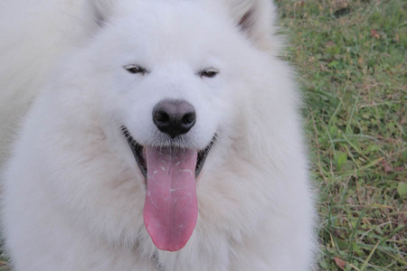
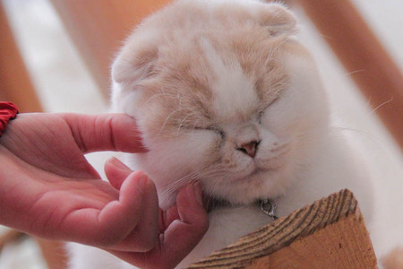
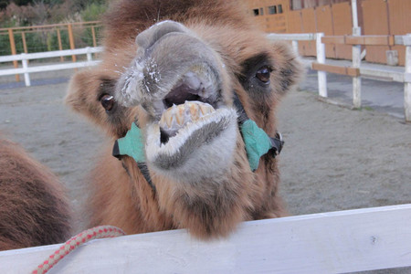
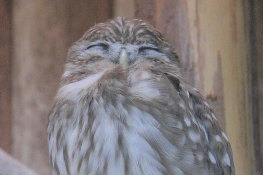

【ドウブツカメラ！】「動物の笑顔」（撮影：ソーズビー・陶子さん）
１１月１９日（月）「動物の笑顔」
今回の動物カメラマンは、ソーズビー航洋と山田陶子。
２人が撮ったベストショットはこちら！
※画像をクリックすると大きな画像が開きます。
また、開いた画像を右クリックすると保存ができます。
犬の笑顔 撮影：山田陶子『と〜う〜こ〜さぁ〜ん♪』

猫の笑顔 撮影：ソーズビー航洋『にゃ。』

ラクダの笑顔 撮影：ソーズビー航洋『あーあはははははははは!! 』

フクロウの笑顔 撮影：山田陶子『ほっこり〜♪』

ロケ中のオフショットはこちら！


投稿者:大天才テレビジョン社員３号 | 投稿時間:18時45分 | カテゴリ：ドウブツカメラ！ | 固定リンク


 " title="ソーシャルブックマークについて">
" title="ソーシャルブックマークについて">
※NHKサイトを離れます。
【５年前の私】長谷川ニイナ
ハロー★ニイナでーす！
あれから何年たちましたっけ・・・。５年前ですかねぇ。
５年前の私は、２年生！！
おぉ！！５年前ってもうそんなに前かぁって・・・ちょっとびっくりです。
でも正直、身長は変わったけど、性格はあまり変わっていないような気がします！
でも、５年前の自分と比べたら、物事を見る目が変わったような感じが・・・！
そう！考える事とか！今日のご飯とか・・・！
あと、５年前はバナナとかグレープフルーツがきらいだったけど、今は本当に大好き！！！
そういうのは、けっこうコロコロ変わります！
それにしても、なつかしい〜（＾０＾）
あの頃に戻りたいなぁという事もあるけど、今の方がいいなぁって事もあって、アルバム見てるだけでいろいろ考えるので楽しいでーす！
ついつい時間がたってしまう！
５年後の私はどうなるのかな〜！
５年後も、こんな事言っているのかな〜！イヒヒッ！

（写真は友達と動物園に行った時の写真でーす！！
私変わっていますか〜！？）
投稿者:長谷川ニイナ | 投稿時間:18時00分 | カテゴリ：We are 大天才テレビジョン | 固定リンク
" title="ソーシャルブックマークについて">
※NHKサイトを離れます。
【てれび戦士プロデュース室】「公共電波にのっかって」ライブバージョン
あ、そうそう。
先日行われた「NHK文化祭2012」のときのてれびちゃん「公共電波にのっかって」ライブ映像を公開中。
こちらのアドレス→ http://www.nhk.or.jp/tvkun/nenkan/index.html です！！

そして、こちらてれびちゃんのイラスト。
岡山県倉敷市の小野茉由佳さん、ありがとうございました！
イラストなども随時ご紹介していきますね。
投稿者:大天才テレビジョン社員１号 | 投稿時間:14時30分 | カテゴリ：てれび戦士プロデュース室 | 固定リンク
" title="ソーシャルブックマークについて">
※NHKサイトを離れます。